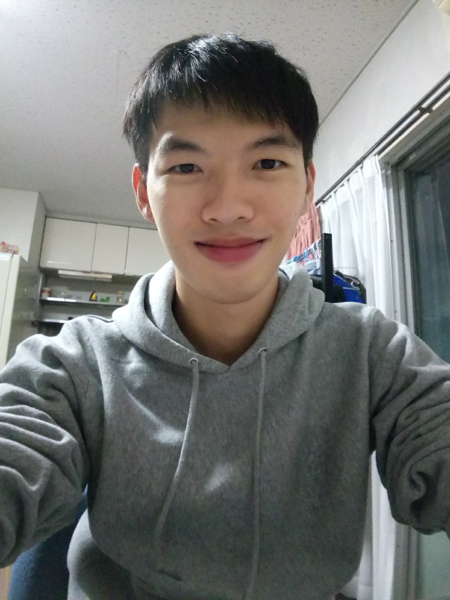

<!-- OK v.0-->
<!-- img 跟 text 置中問題-->
<!-- 設計要重新思考 -->

<div class="container-fluid text-center">
	<div class="profile-view row">
		<div class="profile-element profile-photo col-md-6 col-sm-12">
			
		</div>
		<div class="profile-element profile-intro col-md-6 col-sm-12">
			
			<p>你好！歡迎來到我的部落格，目前在東京工業大學留學交換</p>

			<p>這個部落格上會有我許多生活牢騷</p>

			<p>也會有一些我研究程式的紀錄</p>

			<p>我的興趣有很多，運動、音樂、程式設計、下廚等等</p>

			<p>運動來說，游泳、慢跑是我最常做的，籃球跟跆拳道會一點</p>

			<p>音樂的話，我都還在半調子的初學程度，像是吉他跟鋼琴，不過我很喜歡聽各種音樂</p>

			<p>下廚的話，因為留學的關係，常常有機會可以自己煮，於是也學會了各種簡單的料理</p>

		</div>
	</div>
</div>